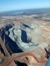
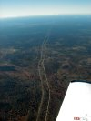
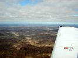
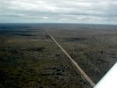
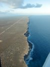

|
We got up very early next morning just to find out that Barbara, the owner of the Goldfields Backpackers, didn't feel like getting up early on a Sunday morning, so we had to wait for more than an hour before we could get back our key deposit. Meanwhile Klaus got his weather reports and briefing material using the fax from the brothel across the street. Barbara also refused to drive us back to the airport - "We do pickups but not drop offs" was here comment. Well well, it was only a short taxi ride anyway.
 After orbiting Kalgoorlie a couple of times to take pictures of the Super Pit we continued our journey eastwards by following  the railway for some hundred kilometers until we headed southeast towards Caiguna. The Nullarbor Plain east of Kalgoorlie is an enormous mass of land that is totally flat and completely empty. Not much to navigate by - long live the GPS!  At John Eyre Motel we stopped two hours for lunch. Originally we had planed to stay overnight, but we were  early and the weather was fairly good so we decided to grab this opportunity to catch up the lost day and continued eastwards. The coastline made for an incredible scenery. The Nullarbor Plain just ends and drops 300 feet in to the water. This is good scenery to practice a bit of low-level flying.
 We arrived at Nullarbor Motel half an hour before last light. Terry, a Royal Aero Club WA pilot on his way back to Perth, had also chosen to 'pitch his tent' here, in the middle of nowhere. He had spent most of the day in bad weather and at low level under heavy clouds - he was happy to hear the weather was better to the west and we were happy we hadn't planned to go east, but north the day after.
The room was expensive but very nice and to Klaus' relief we had our own TV with a channel showing the Monaco Formula 1 Grand Prix.


| |
|
{kind=link}
{kind=link}
{kind=link}
{kind=link}
{kind=link}